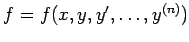
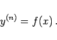
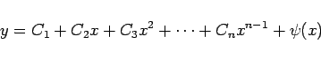
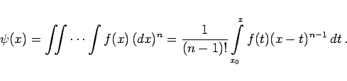
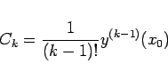

Inhalt Index DeskTop Bronstein

 Differentialgleichungen Gewöhnliche Differentialgleichungen Differentialgleichungen höherer Ordnung und Systeme von Differentialgleichungen Erniedrigung der Ordnung
Differentialgleichungen Gewöhnliche Differentialgleichungen Differentialgleichungen höherer Ordnung und Systeme von Differentialgleichungen Erniedrigung der Ordnung


 ist eine Funktion von x allein:
|  | (9.32a) |
Die allgemeine Lösung erhält man durch n-malige Integration in der Form
|  | (9.32b) |
mit
|  | (9.32c) |
Hierbei ist zu beachten, daß x0 keine zusätzliche willkürliche Konstante ist, denn eine Änderung von x0 zieht wegen
|  | (9.32d) |
eine Änderung von Ck nach sich.